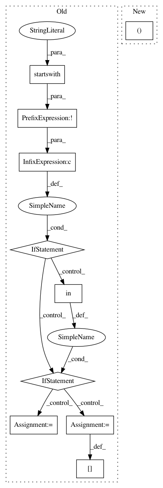

cc75a833a9676cb51f2f2269257dd725c22915a7,scipy/spatial/distance.py,,pdist,#Any#Any#,1609
Before Change
mstr = metric.lower()
// NOTE: C-version still does not support weights
if "w" in kwargs and not mstr.startswith("test_"):
if(mstr in _METRICS["seuclidean"].aka or
mstr in _METRICS["mahalanobis"].aka):
raise ValueError("metric %s incompatible with weights" % mstr)
// need to use python version for weighting
kwargs["out"] = out
mstr = "test_%s" % mstr
metric_name = _METRIC_ALIAS.get(mstr, None)
if metric_name is not None:
X, typ, kwargs = _validate_pdist_input(X, m, n,
After Change
elif isinstance(metric, string_types):
mstr = metric.lower()
mstr, kwargs = _select_weighted_metric(mstr, kwargs, out)
metric_name = _METRIC_ALIAS.get(mstr, None)
In pattern: SUPERPATTERN
Frequency: 3
Non-data size: 10
Instances
Project Name: scipy/scipy
Commit Name: cc75a833a9676cb51f2f2269257dd725c22915a7
Time: 2018-09-08
Author: pav@iki.fi
File Name: scipy/spatial/distance.py
Class Name:
Method Name: pdist
Project Name: scipy/scipy
Commit Name: cc75a833a9676cb51f2f2269257dd725c22915a7
Time: 2018-09-08
Author: pav@iki.fi
File Name: scipy/spatial/distance.py
Class Name:
Method Name: cdist
Project Name: mozilla/bugbug
Commit Name: f16992b25bb153df3ab87c5111db2a101cf68c73
Time: 2020-04-09
Author: mcastelluccio@mozilla.com
File Name: bugbug/models/testselect.py
Class Name: TestSelectModel
Method Name: train_test_split